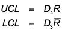
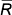
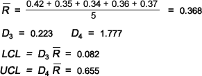

Detecting changes to process variability
A control chart of sample means is used to detect shifts in the 'centre' of a process. In a similar way, a control chart to assess whether the process variability has changed can be based on the spread of successive samples.
A control chart for changes in process variability can be based on the sample standard deviations of successive samples, but it is more common in practice to use a control chart based on the sample ranges.
Control chart for range
Although control charts for ranges are interpreted and used in the same way as all other control charts — there is very little chance of observations breaching the control limits if the process is in control — the control limits are obtained in a different way.

where  is again the average of the training sample ranges. The constants D3 and D4 relate the spread of the training samples (through the value of ) to the control limits. These constants depend on the common training sample size n and are tabulated below.
| Sample size, n | D3 | D4 |
|---|---|---|
| 2 | 0 | 3.267 |
| 3 | 0 | 2.575 |
| 4 | 0 | 2.282 |
| 5 | 0 | 2.115 |
| 6 | 0 | 2.004 |
| 7 | 0.076 | 1.924 |
| 8 | 0.136 | 1.864 |
| 9 | 0.184 | 1.816 |
| 10 | 0.223 | 1.777 |
Note that the lower control limit is zero for sample sizes of 6 and lower.
Paint primer thickness
The diagram below shows the ranges of successive paint primer samples, along with control limits that were obtained from the initial five training samples.
The actual data values have also been drawn on the chart in grey to help you see the connection between the sample ranges and the raw data. They are not usually included in range charts.
Use the slider to display the ranges of the samples from the following 15 half-days. The ranges are all within the control limits, so there is no indication of a change in the process variability.
The calculations for the upper and lower control limits for the range chart are shown below.

By separately targetting the process centre and variability with a control chart for means and a control chart for ranges, we can get better indications of any changes in the performance of the process, and we can therefore intervene more promptly to correct potential drops in quality.